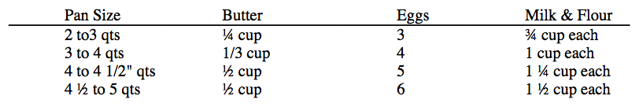

Banana Bread
Biscuits
Bishop's Bread
Blueberry Coffee Cake
Buttermilk Hotcakes
Chippewa Fried Bread
Cornmeal Mush
Crunchy Gradnola
Dutch Babies
Funnel Cakes
Gingerbread Scones
Northern Sweet Cornbread
Pumpkin Nut Bread
Sour-Cream Coffee Cake
Tea Scones
Waffles
Preheat oven to 425º.

Select the recipe proportions to fit your pan. Put the butter in your pan and set into the 425 oven. Mix batter quickly while butter melts. Put eggs in blender container and whirl at high speed for 1 minute. With motor running, gradually pour in milk, then slowly add flour; continue whirling for 30 seconds. (With a rotary beater, beat eggs until light and lemon colored; gradually beat in milk, then flour.)
Remove pan from oven and pour batter into the hot melted butter. Return to oven and bake until puffy and well browned--20 to 25 minutes, depending on the pan. Dust with ground nutmeg, if you wish, and serve at once with toppings.
Pancake Toppings:
The Classic--Have powdered sugar and wedges of lemon at the table. Sprinkle sugar and squeeze lemon over.
Syrups--Warm honey, maple or other flavored syrup.
Fresh or Hot Fruits--Pick your choice of what is available.